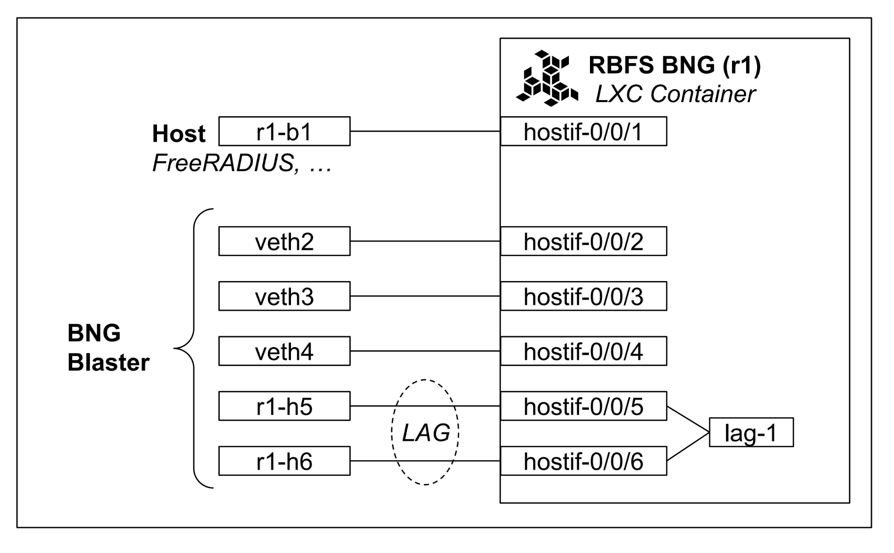

Setup
The image below illustrates the virtual test environment, featuring a virtual BNG powered by RBFS running in a container.
Host
The host system is running Ubuntu 22.04 LTS, a stable and widely used Linux distribution.
The interface pair r1-b1 - hostif-0/0/1 connects the BNG
to the host, supporting protocols like RADIUS. The remaining interfaces are dedicated
for use with the BNG Blaster.
$ ip addr show r1-b1
17: r1-b1: <BROADCAST,MULTICAST,UP,LOWER_UP> mtu 9000 qdisc noqueue state UP group default qlen 1000
link/ether 5a:86:f8:2c:aa:44 brd ff:ff:ff:ff:ff:ff
inet 192.0.2.2/24 brd 192.0.2.255 scope global r1-b1
valid_lft forever preferred_lft forever
inet 192.0.2.3/24 brd 192.0.2.255 scope global secondary r1-b1
valid_lft forever preferred_lft forever
inet 192.0.2.4/24 brd 192.0.2.255 scope global secondary r1-b1
valid_lft forever preferred_lft forever
inet6 fc66:1337:7331:1::4/64 scope global
valid_lft forever preferred_lft forever
inet6 fc66:1337:7331:1::3/64 scope global
valid_lft forever preferred_lft forever
inet6 fc66:1337:7331:1::2/64 scope global
valid_lft forever preferred_lft forever
inet6 fe80::5886:f8ff:fe2c:aa44/64 scope link
valid_lft forever preferred_lft forever
RtBrick Full Stack
The virtual BNG is powered by RtBrick Full Stack (RBFS), a cutting-edge network operating system designed for disaggregated switches.
Documentation
RBFS Documentation: https://documents.rtbrick.com/techdocs/current/index.html
RBFS Training: https://documents.rtbrick.com/trainings/current/index.html
Login
To connect to the virtual BNG (r1) from the host, use the command ssh student@r1 with the password student.
student@netuk2-student-01:~$ ssh student@r1
student@r1's password: student
student@r1>netuk2-student-01: op>
Upon logging in, you will be placed directly into the CLI environment, as your user does not have shell access.
Configuration Mode
In configuration mode, you have multiple ways to view and manage the system configuration:
Show the configuration in JSON format: Use
show configfor a structured overview.View as SET commands: Use
show config set, which lists the configuration as commands.Path-specific views: Both commands can be followed by a specific path, such as
show config interfaces, to focus on a particular configuration area.
Managing Configuration Changes
View pending changes: Use
show diffto see the differences between the current and proposed configurations.Apply changes: Use
committo make changes active.Discard changes: Use
discardto revert any pending changes.Rollback to a previous configuration: Use
rollback <revision>, e.g.,rollback 1, to revert to a previous state.
RBFS offers a streamlined and robust experience for managing disaggregated networking environments, ensuring flexibility and control while maintaining an intuitive CLI interface.